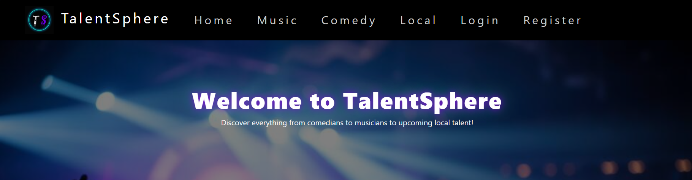
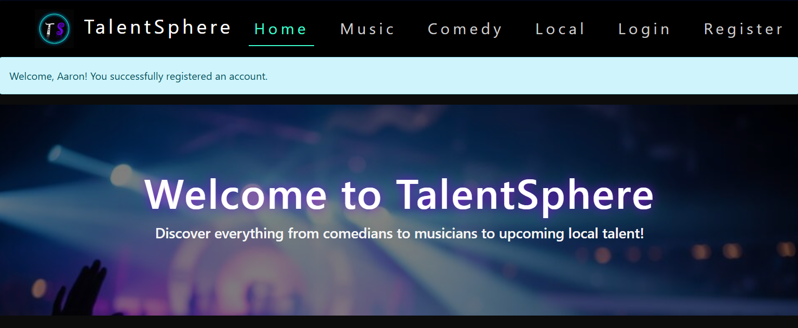
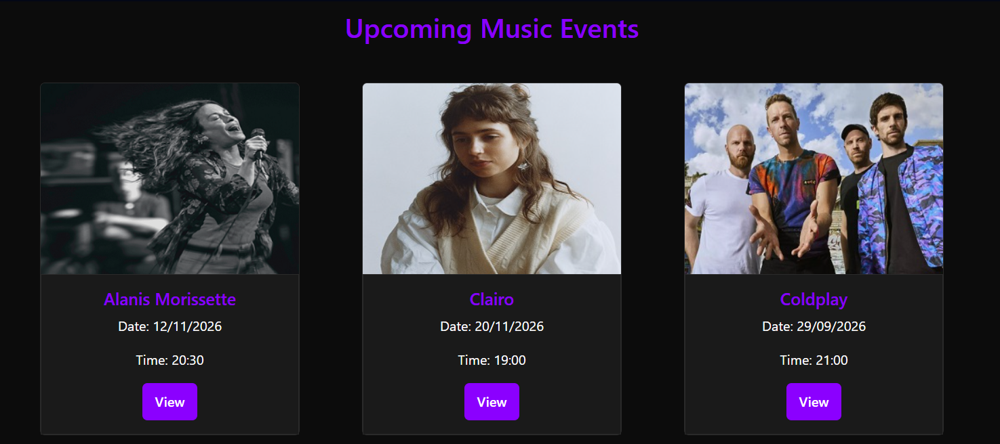
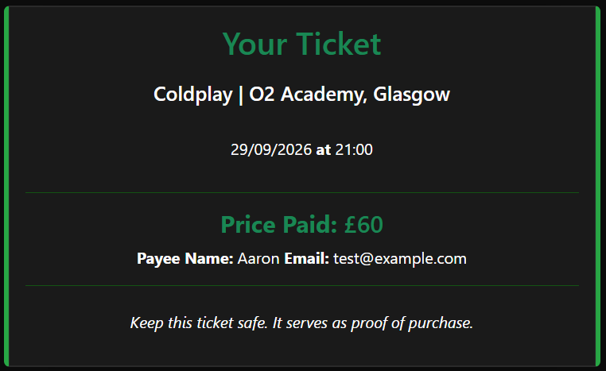
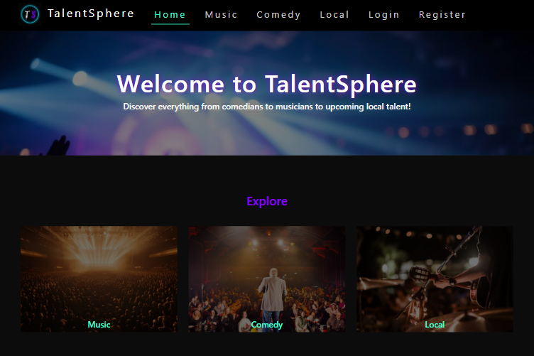
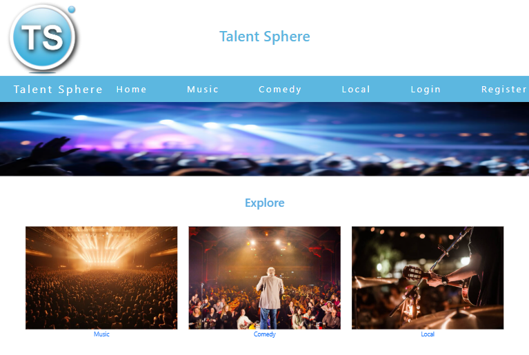
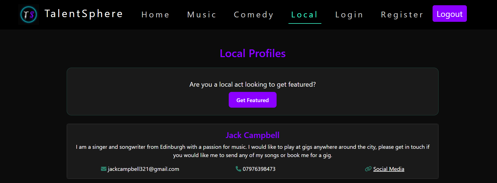
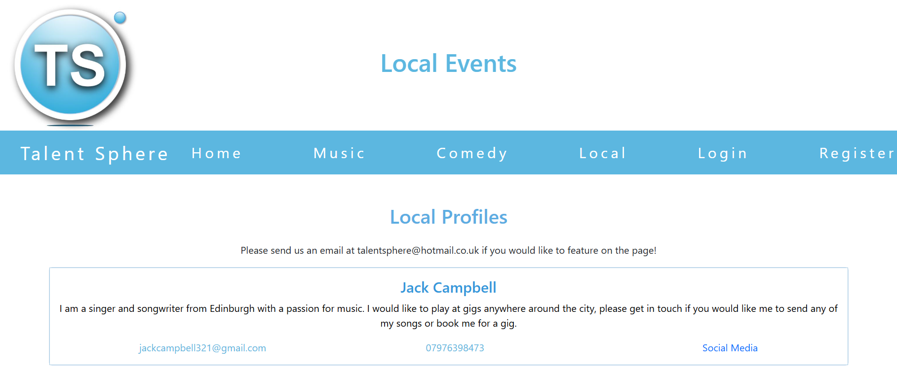

Project
This was my first ever full web application I developed using Python and Flask. The platform is an event booking system, with a focus on promoting both popular acts and local up and coming talent. I am happy with how it turned out as I managed to incorporate most of the features I had planned including the ability for users to register and login, browse events as well as book and receive personalised tickets.
Details
HTML (Bootstrap)
CSS
Python (Flask)
SQLite
The application included core features such as user authentication, event browsing and ticket booking. I implemented dynamic pages using Flask templates and handled user interactions through routing, redirects and flashed messages. Although there is no admin panel, it’s still possible to manage user and event data by running SQL statements manually using schema files that build and update the SQLite database. This approach was suitable for this project as it was a prototype website for a university project, but a fully functional admin panel would’ve been used in a real world scenario to ensure ease of managing data and reducing the chance of errors.
Please click here if you'd like to view the GitHub repository.

Flashed message after registering

Dynamic event cards

Ticket pulling data from database
Since developing and submitting my original website for the advanced web technologies module, I critically evaluated and redesigned various features of the website. Initially, I put most of my time and effort into the back-end of the website, focusing on core functionality such as user authentication, event listings and the booking process. I incorporated most of the requirements I had set out to do which required Python and Flask. This meant that I didn’t have as much time to focus on the front-end of the website. I recently revisited the application and redesigned key areas of the front-end. This included improving areas such as the colour scheme, layout, visual design and usability, bringing the interface more in line with UX best practices and Nielsen’s usability heuristics. The application now feels much closer to what users would expect from a modern event booking platform. The previous version was functional but visually unappealing and the redesign significantly improves the overall aesthetic and usability leading to a better overall user experience.

Redesigned top section of home page

Original top section of home page
This project significantly improved my back-end development skills. Prior to this project, I had only experimented with small Flask components, but this was my first time developing a fully functional web application. I became much more confident working with Flask and even gained experience working with SQLite. I also learned the importance of balancing functionality and design. While my initial focus was on implementing the core back-end functionality, revisiting the project showed me how much impact the design can have on the overall experience.

Redesigned local page with CTA

Original local page